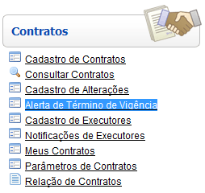
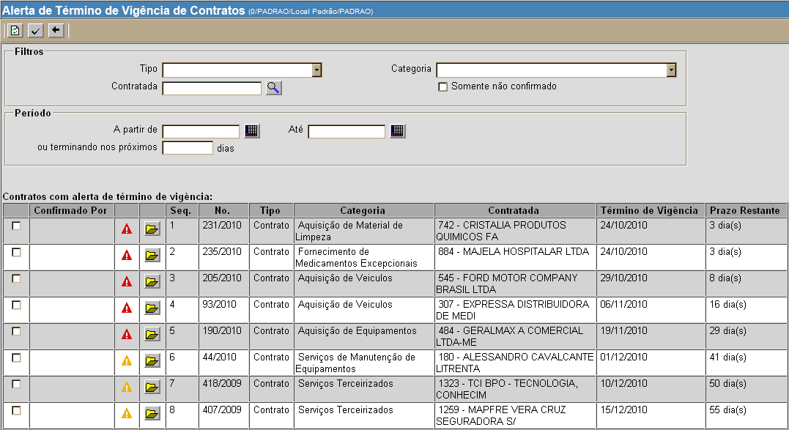
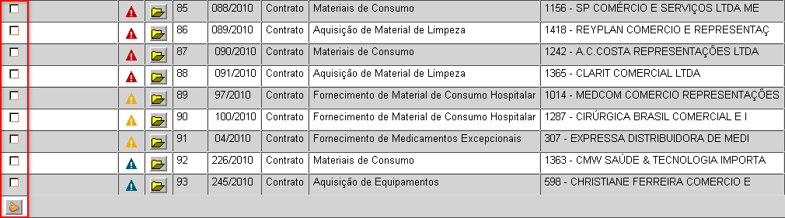

Alerta de Término de Vigência [ Voltar ]
Esta tela permite a consulta de contratos cuja
vigência está próximo do vencimento. O usuário
pode utilizar filtros para realizar pesquisas por tipo de contrato,
categoria, contratada e/ou período.
O formulário "Alerta
de término de vigência" encontra-se dentro do
menu "Contratos".

Ao clicar no menu "Alerta
de término de vigência", o sistema exibirá a seguinte tela:

Para gerar a listagem de contratos e respectivos
términos de vigência, siga os passos abaixo:
1º Passo: se desejar, configure os filtros e
período para localizar o(s) contrato(s) desejado(s). Os
filtros disponíveis são:
- Tipo.
Se desejar os resultados retornem apenas um determinado tipo de
contrato, selecione o tipo de contrado desejado.
- Categoria.
Após selecionar um tipo de contrato, as respectivas categorias deste
serão exibidas. Se desejar retornar resultados apenas para
- Contratada.
Clique no botão
 [Procurar]
para selecionar uma contratada a partir de uma listagem de fornecedores
cadastrados. [Procurar]
para selecionar uma contratada a partir de uma listagem de fornecedores
cadastrados.
- A
partir de / Até. Você pode selecionar aqui as datas
inicial e final que comporão o período para a pesquisa.
Dicas para
preenchimento dos campos de data:
- Data
atual: digite o sinal . (ponto) e
pressione a tecla "Enter" para que o sistema retorne a data atual;
- Data
do mês corrente: digite o dia do mês e
pressione a tecla "Enter" para que o sistema retorne o mês e ano
correntes;
- Dias
a contar da data atual: digite o sinal + (mais) ou - (menos)
antes do número de dias em referência à data atual e pressione
a
tecla "Enter" para a data anterior ou posterior à data atual.
Exemplo: se a data
atual é 20/10/2010,
digite "+10"
e pressione a tecla "Enter" para que o sistema retorne o dia 30/10/2010
- Ou
terminando nos próximos ... dias. Para consultar
contratos que vencerão em um certo período de dias, informe
neste campo
o número de dias (a contar da data atual) até o qual a pesquisa deve
ser realizada.
2° Passo: após configurar os filtros do alerta,
clique no botão  para
gerar os resultados. Os seguintes símbolos são
utilizados
para facilitar a interpretação dos resultados: para
gerar os resultados. Os seguintes símbolos são
utilizados
para facilitar a interpretação dos resultados:
Importante
Se
você recebeu a notificação do término de vigência de
um contrato e
já tomou as devidas providências, siga os passos abaixo para deixar de
receber futuras notificações e excluir o contrato da lista de alerta de
término de vigência:

- Marque
a caixa de seleção referente aos contratos para os quais deseja
confirmar o recebimento da notificação do término de vigência.
- Em seguida, clique no botão . Desta forma, você não mais
receberá notificações dos contratos selecionados e estes não constarão
mais na listagem de alerta.
Ir
para o topo da página
|